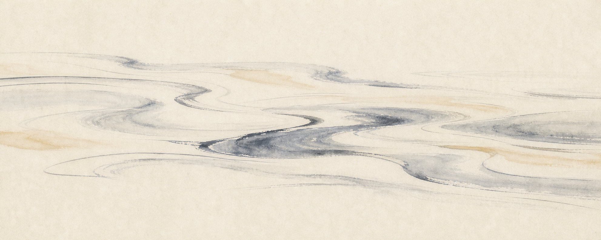

事件理解卡
深色模式
花蓮原住民族重大歷史事件｜NotebookLM 輔助閱讀
縱谷無言．事件理解卡
班級
座號
姓名
1. 我研究的事件
大港口事件 Cepo'
大分事件
七腳川事件
太魯閣戰役

2. 事件基礎資料
時間
地點
族群
人物
3. AI 協助我理解
大港口事件：請根據 PDF，整理清軍、地方官員與 Cepo' 部落對事件原因的三種說法。
大分事件：請整理 1914-1933 年布農族抵抗、遷移與 Dahu Ali 相關線索。
七腳川事件：請說明七腳川社與日本官方說法的差異，並列出可引用頁碼。
太魯閣戰役：請比較日方理蕃政策與太魯閣族守護土地的觀點。
我問 NotebookLM 的問題
NotebookLM 給我的 3 個重點
我抓到的 3 個關鍵詞
4. 我改掉 AI 一個地方
AI 原句
日本政府平定了七腳川社的叛亂。
我的改寫
日本政府以武力鎮壓七腳川社，族人則從保護部落與土地的角度理解這場衝突。
AI 原句 → 改寫範例
日本政府
平定
了
叛亂
→ 日本政府
以武力鎮壓
，族人從
保護部落與土地
理解衝突。
我修改的理由
立場詞對照表 ─ 找出 AI 用了哪一邊的詞
漢/日方與族方對同一事件常用不同詞彙。AI 答案多偏漢/日視角,你的工作是找出至少一個並改寫成更中性或族視角的版本。
詞彙
漢/日視角
族視角
適用事件
過度簡化風險
招撫
招撫原住民、撫番
國家力量介入、要求服從
大港口
不宜一律譯成「強迫歸順」
平亂
官兵殺平、攻剿
抵抗入侵後遭鎮壓
大港口
可改「鎮壓抵抗」,保留清廷視為亂事的立場
滅社
喪身滅社、討伐滅社
部落被拆散、遷徙、失去故土
大港口、七腳川
「清軍屠殺」只適大港口;七腳川是日治「討伐滅社」
理蕃
治理蕃地的政策
殖民管控、分類與改造
大分、七腳川、太魯閣
標出日治原詞
歸順
臣服、投降、歸順日本
被迫投降或戰術性和解
大分、七腳川、太魯閣
「被迫投降」太單一;大分有 Dahu Ali「和解」與「最後未歸順蕃」的差別
收押槍枝
沒收以便治理
剝奪生計、防衛、狩獵能力
大分、太魯閣
大分事件導火線之一
駐在所
山地警察治理據點
壓迫、監控、衝突目標
大分、太魯閣
大分多次涉襲擊駐在所
討伐／征討
軍警合法征伐
國家級武力入侵
七腳川、太魯閣
比「平亂」更日治準確
隘勇線
警備防線、理蕃設施
壓縮生活領域、迫使衝突
七腳川、太魯閣
七腳川叢書目次列「協助隘勇線的建立」
太魯閣蕃討伐
日方戰役稱呼
太魯閣族抗日／保衛土地
太魯閣
詞彙本身就是立場詞
正名
從事件改稱戰役
歷史平反、恢復族群敘事
大港口
2022 正名 Cepo' 戰役
5. 立場差異
官方說法
部落／族人說法
兩種說法最大的差異
6. 地景與記憶
河流／溪流
部落／舊社
道路／古道
紀念碑／遺址
現在看起來像什麼
知道歷史後，我會怎麼看
7. 三句展示句
事實句：我知道這件事發生在……
差異句：不同立場的差異是……
省思句：我重新理解花蓮地景是……
8. 資料來源
來源 1：標題／頁碼
來源 2：標題／頁碼
來源 3：網址或補充頁碼
9. 同儕互評：一勾一改
事實句有時間、地點或人物
差異句有兩種立場
省思句不是只說「我覺得很可憐」
我建議同學改成這一句
下半部：AI process log
我怎麼判斷 AI 哪裡需要改
我最後保留／刪除／查證了什麼